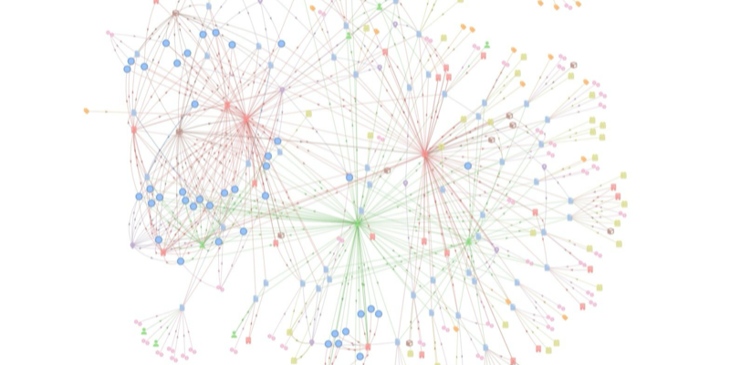

LLM-Agentensysteme für Analytics und Prognosen.
AI Engineer und Data Scientist mit Schwerpunkt auf LLM-Agentensystemen für Analytics-Workflows. Bei InnoGames entwickle ich agentenbasierte Werkzeuge zur Umsetzung und Validierung von Änderungen an Power-BI-Berichten und erstelle Zeitreihenprognosen mit Foundation-Modellen wie TabPFN. Dazu gehört ein LLM-Agent, der versionierte Planungsdokumente in Prognosekovariaten überführt. Darüber hinaus arbeite ich an der Analytics-Infrastruktur und bringe zehn Jahre Erfahrung aus Telekommunikation, Finanzwesen, Versicherung und Gaming mit.
Foundation-Modelle und agentenkompilierte Text-Kovariaten für Spielumsätze.
Meine M.Sc.-Abschlussarbeit untersucht, ob Kovariaten, die ein LLM-Agent aus den Planungsdokumenten des Studios extrahiert, die Nettoumsatzprognose für einen Zeitraum von drei Monaten gegenüber den bei InnoGames derzeit verwendeten kalenderbasierten Merkmalen verbessern.
Noch in Bearbeitung; Abgabe im Dezember 2026. Weitere Details nach Einreichung der Arbeit.
LLM-Agentensysteme für Analytics, ergänzt durch Zeitreihenprognosen mit Foundation-Modellen.
Ich entwickle LLM-basierte Werkzeuge für Analytics-Aufgaben, darunter Änderungen an Power-BI-Berichten und die Aufbereitung von Eingaben für Prognosemodelle. Klar definierte Freigabe-, Validierungs- und Eskalationsschritte sorgen dafür, dass Änderungen kontrollierbar und nachvollziehbar bleiben.
Mein zweiter fachlicher Schwerpunkt ist die Zeitreihenprognose. In meiner M.Sc.-Abschlussarbeit an der Leuphana Universität untersuche ich, ob aus Planungstexten abgeleitete Kovariaten die Nettoumsatzprognose bei InnoGames verbessern. Die Arbeit verbindet Zeitreihen-Foundation-Modelle mit Informationen aus versionierten Planungsdokumenten.
Derzeit schließe ich meinen M.Sc. in Management & Data Science an der Leuphana Universität als Deutschlandstipendiat ab und arbeite parallel bei InnoGames an Analytics und der Entwicklung von Agentensystemen. Ab April 2027 stehe ich für Vollzeitpositionen als AI Engineer oder Data Scientist in Deutschland zur Verfügung.
Ausgewählte Projekte: LLM-Agentensysteme, Wissensgraphen und bayesianische Modellierung
Wofür ich arbeite
Meine Projekte umfassen LLM-Agentensysteme, Zeitreihenprognosen, bayesianische Modellierung und Wissensgraph-Anwendungen. Dazu zählen ein Multi-Agenten-Toolkit, das von einem Analytics-Team genutzt wird, ein Frage-Antwort-System über Wissensgraphen, ein hierarchisches bayesianisches Modell für den Customer Lifetime Value und ein Multi-Agenten-Assistent für Unternehmensgründungen.
Multi-Agenten-Toolkit für Power-BI-Report-Änderungen
Multi-Agenten-Toolkit auf Basis von Claude Code, im ganzen Analytics-Team genutzt: Es plant, implementiert und verifiziert Power-BI-Dashboard-Änderungen in PBIP/TMDL ohne Schritt-für-Schritt-Anleitung.

ChefTreff AI Hackathon: Gründer-Assistent
Multi-Agenten-Assistent, der Gründerinnen und Gründer bei der Unternehmensgründung in Deutschland unterstützt: Businessplan, Marketingplan und rechtliche Dokumentation.

Knowledge Graph Question Answering
SPARQL-basierte Fragebeantwortung über strukturierte Wissensgraphen, ermöglicht Abfragen in natürlicher Sprache über RDF-Wissensbasen.

KVG ML Route Modelling
ML zur Modellierung und Vorhersage von Transportrouten für einen regionalen Verkehrspartner, unter Kombination von Geodaten mit prädiktiver Modellierung.

Neo4j Graph Analysis of Artist Influence Networks
Graph-Datenbanklösung mit Neo4j und Cypher zur Analyse des künstlerischen Einflusses und zur Clusterung musikalischer Genealogien.

Hierarchical Bayesian Pareto/NBD: Replication of Abe (2009)
Implementierung und Validierung des hierarchischen Bayesianischen Pareto/NBD-Modells aus Abe (2009) am kanonischen CDNOW-Datensatz.
ChefTreff AI Hackathon: Product Detection
In 24 Stunden entwickelt: eine Computer-Vision-Pipeline zur Erkennung beschädigter oder defekter Objekte in Produktbildern.
Beiträge zu LLM-Agentensystemen und angewandtem maschinellem Lernen
Verfügbar in Deutschland ab April 2027, bevorzugt in Hamburg, München oder Düsseldorf.
Ich interessiere mich für Positionen als AI Engineer oder Data Scientist mit Schwerpunkt auf LLM-basierten Systemen, Prognoseautomatisierung oder Analytics-Plattformen. Dabei verbinde ich praktische Erfahrung in der KI-Entwicklung mit zehn Jahren Erfahrung in der Umsetzung fachlicher Anforderungen in wartbare Daten- und Analytics-Lösungen.
Meine Arbeit passt gut zu sechs Arten von Teams:
- Versicherungs- und Rückversicherungs-Analytics. Underwriting-Segmentierung bei Absolute Insurance und aktuelle bayesianische Prognoseverfahren, anwendbar auf den Münchner Versicherungs-Cluster und darüber hinaus.
- Gaming und Consumer Products. Prototypen für Umsatzprognosen und Aufbau von Analytics-Infrastruktur bei InnoGames in Hamburg, inklusive Migration nach Microsoft Fabric und Power-BI-Dashboards.
- KI-native Startups und angewandte KI-Labs mit Fokus auf LLM-Systeme, Agenten-Architekturen und Retrieval. Ich habe ein Multi-Agenten-Toolkit entwickelt und eingeführt, das ein Analytics-Team täglich nutzt, und meine Abschlussarbeit entwickelt einen Agenten, der Planungstexte in Eingaben für Umsatzprognosen überführt.
- Telekommunikations- und Netzwerk-Analytics. Acht Jahre bei MTS mit Marktanalyse und M&A für die Märkte Indien, Serbien, Slowenien und Moldau, relevant für Telekommunikationsunternehmen und Netzbetreiber, unter anderem in München.
- Global agierende Tech-Firmen und Plattformteams in Hamburg, München und Düsseldorf, in denen Prognosen, angewandtes ML und produktive Analytics-Lösungen produktübergreifend skalieren.
- Startups und Scale-ups, bei denen produktives ML und Agentensysteme das Kernprodukt bilden und kein Pilotprojekt bleiben.
Ich arbeite auf Englisch (C1, IELTS 8,0) und Deutsch (B2-C1). Meine Analytics-Erfahrung umfasst internationale Teams in Finanzwesen, Telekommunikation, Versicherung und Gaming.